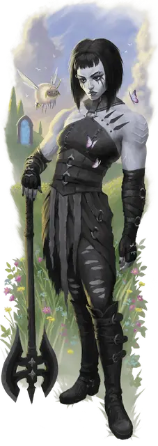

Хранитель врат
Gate Warden

Требование: кампания в сеттинге «Planescape»
В этом разделе представлены две предыстории для персонажей 1-го уровня, сильно связанных с Сигилом, Внешними землями или с ними обоими: хранитель врат и планарный философ. Если вы выберете любую из этих предысторий, вы получите черту, указанную в его описании. Если выбранная вами предыстория не даёт черту, вы получаете бонусную черту по вашему выбору из следующих вариантов:
- Одарённый
- Крепкий
Вы провели значительное количество времени где-то под влиянием мощных планарных сил или портала в другой план существования, например, в одном из городов-ворот в Внешних землях. Вы привыкли к событиям, которые заставили бы других шататься от ужаса или восхищаться потусторонней красотой и вам так же комфортно иметь дело с Небожителями и Исчадиями, как и с городскими торговцами (которые могут быть ими же).
Навыки: Выживание, Убеждение
Языки: Два на ваш выбор (рекомендуются язык Бездны, Инфернальный или Небесный)
Снаряжение: связка ключей от неизвестных замков, пустая книга, чернильная ручка или перо, бутылочка с чернилами, комплект дорожной одежды и кошель с 10 зм
Умение: Планарное влияние
Жизнь в городе-вратах или подобном месте приобщила вас к планарной энергии. Вы получаете черту «Наследник Внешних Планов». Кроме того, вы знаете, где можно найти бесплатное скромное жилье и еду в той общине, в которой вы выросли.
Создание персонажа хранителя врат
Те, кто длительное время находится рядом с постоянным порталом на другой план, впитывают сущность, излучаемую из потустороннего мира. Те, кто находится под влиянием одного плана, имеют сходство в поведении и даже внешнем облике.
Варианты персонализации. Влияние Внешних планов формирует ваше мировоззрение. В таблице «Черты характера хранителя врат» предложены черты, которые вы можете применить к своему персонажу.
Черты характера хранителя врат
| к6 | Черта характера |
| 1 | Меня не пугают странные события и потусторонние существа. |
| 2 | Я думаю с точки зрения обмена; что-то за что-то, ничего ни за что. |
| 3 | Я говорю с необычной интонацией. |
| 4 | Я приправляю свою речь заимствованными словами или ругательствами из планарных языков. |
| 5 | Я видел достаточно, чтобы понять, что никого нельзя принимать за чистую монету, поэтому я внимательно изучаю всех, с кем имею дело. |
| 6 | У меня есть суеверная привычка, заработаная в моём родном городе-вратах, например, прикасаться к железу, когда я нервничаю, или расставлять предметы в определенном порядке. |
Безделушки хранителя врат. Когда вы создаёте своего персонажа, вы можете один раз совершить бросок по таблице «Безделушки хранителя врат», а не по таблице безделушек в «Книге игрока», для стартовой безделушки.
Безделушки хранителя врат
| к6 | Безделушка |
| 1 | Крошечная подвеска в виде флакона, наполненная капелькой мёда, которая слабо светится. |
| 2 | Небольшой слиток свинца со странным отпечатком большого пальца, который шепчет, если его крепко держать. |
| 3 | Две сферы из магнитного камня, которые звенят, когда притягиваются друг к другу. |
| 4 | Тлеющий уголь, который всегда горячий, но не обжигает кожу, шерсть, чешую и одежду. |
| 5 | Белое перо, излучающее тусклый свет в радиусе 5 футов. |
| 6 | Кольцо из звена цепи, которое после ношения не снимается без болезненного усилия. |